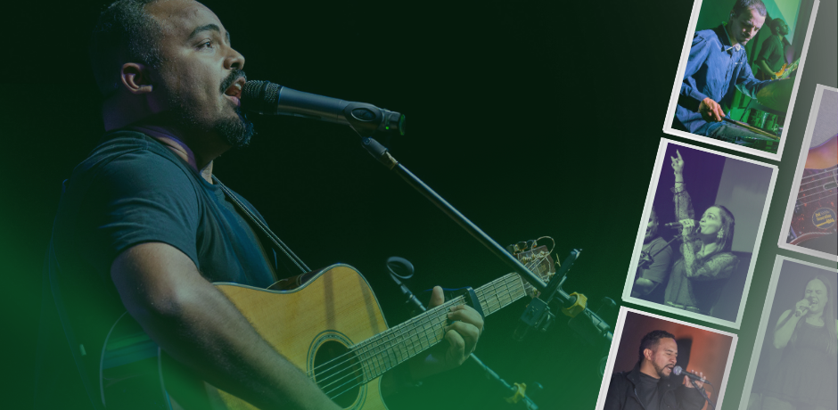
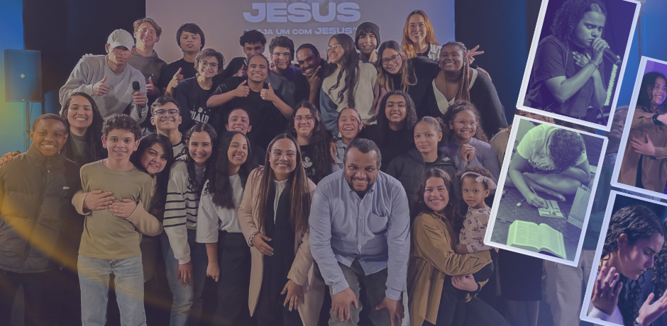
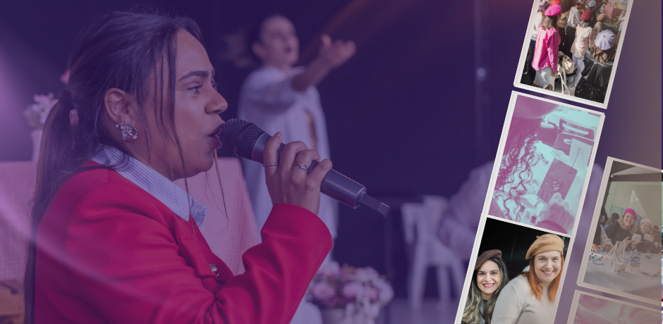
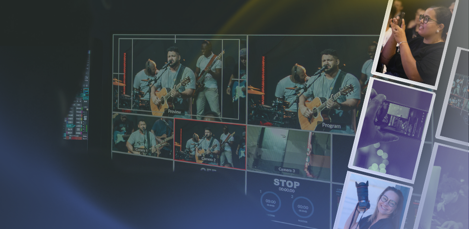

Diaconia
"Assim como o Filho do Homem não veio para ser servido, mas para servir e dar a sua vida em
resgate por muitos."
| Mateus 20:28
O ministério de diaconia na igreja é dedicado ao serviço prático e ao cuidado dos membros,
seguindo o exemplo de Jesus. Os diáconos ajudam nas necessidades da igreja e promovem o amor e a unidade
no corpo de Cristo.
Dança
“Louvem o seu nome com danças,
façam-lhe música com tamborim e harpa.” | Salmos 149:3
O ministério de dança é uma expressão de adoração que une arte, fé e devoção, usando movimentos para
glorificar a Deus e edificar a igreja. Dançar é
uma forma criativa de louvor, celebração e intercessão, que envolve corpo, alma e espírito, transmitindo
mensagens bíblicas e inspirando a congregação a buscar mais de Deus.

Louvor e Adoração
"Adorem o Senhor com alegria; entrem na sua presença com cânticos de júbilo."
| Salmos 100:2
O ministério de louvor e adoração é fundamental na igreja, pois conduz a congregação a uma
experiência profunda com Deus através da música e da adoração. Este ministério envolve músicos,
vocalistas e líderes de louvor que utilizam seus dons para criar um ambiente propício à adoração,
facilitando a conexão espiritual entre os fiéis e o Senhor.
Kids
"Ensina a criança no caminho em que deve andar, e mesmo quando envelhecer não se desviará dele."
| Provérbios 22:6
O ministério infantil é dedicado ao ensino e cuidado das crianças, proporcionando
um ambiente seguro e acolhedor onde elas podem aprender sobre Deus e desenvolver sua fé desde cedo. Este
ministério envolve atividades educativas, recreativas e espirituais adaptadas à faixa etária das
crianças, visando o crescimento espiritual e o fortalecimento dos valores cristãos em suas vidas.

Teens
"Lembre-se do seu Criador nos dias da sua juventude, antes que venham os maus dias e cheguem os
anos dos quais você dirá: 'Não tenho satisfação neles'."
| Eclesiastes 12:1
O ministério de adolescentes é um espaço dedicado ao crescimento espiritual, social e emocional dos
jovens. Este ministério oferece atividades, estudos bíblicos e eventos que abordam os desafios
específicos enfrentados por essa faixa etária, promovendo um ambiente onde os adolescentes podem
fortalecer sua fé, desenvolver relacionamentos saudáveis e encontrar propósito em Cristo.
Jovens
"Não se amoldem ao padrão deste mundo, mas transformem-se pela renovação da sua mente,
para que sejam capazes de experimentar e comprovar a boa, agradável e perfeita vontade de Deus."
| Romanos 12:2
O ministério de jovens é um espaço dedicado ao crescimento espiritual, social e
emocional dos adolescentes e jovens adultos. Este ministério oferece atividades, estudos bíblicos e
eventos que abordam os desafios específicos enfrentados por essa faixa etária, promovendo um ambiente
onde os jovens podem fortalecer sua fé, desenvolver relacionamentos saudáveis e encontrar propósito em
Cristo.
Entre Homens
"Sede fortes e corajosos, todos vós que esperais no Senhor!" | Salmos 31:24
O ministério Entre Homens é um espaço dedicado ao fortalecimento espiritual,
emocional e relacional dos homens. Este ministério promove encontros, estudos bíblicos e atividades que
abordam os desafios específicos enfrentados pelos homens na sociedade atual, incentivando-os a viverem
de acordo com os princípios cristãos, a desenvolverem liderança em suas famílias e comunidades, e a
apoiarem uns aos outros em sua jornada de fé.

Entre Elas
"Mulher virtuosa, quem a achará? O seu valor muito excede o de rubis."
| Provérbios 31:10
O ministério Entre Elas é um espaço dedicado ao fortalecimento espiritual,
emocional e relacional das mulheres. Este ministério promove encontros, estudos bíblicos e atividades
que abordam os desafios específicos enfrentados pelas mulheres na sociedade atual, incentivando-as a
viverem de acordo com os princípios cristãos, a desenvolverem liderança em suas famílias e comunidades,
e a apoiarem umas às outras em sua jornada de fé.

Midias Sociais
"Portanto, ide e fazei discípulos de todas as nações, batizando-os em nome do Pai, e do Filho,
e do Espírito Santo."
| Mateus 28:19
O ministério de mídias sociais é responsável por gerenciar a presença online da
congregação, utilizando plataformas digitais para compartilhar mensagens inspiradoras, eventos e
atividades da igreja. Este ministério visa alcançar um público mais amplo, engajar a comunidade e
promover a fé cristã através de conteúdos relevantes e interativos, fortalecendo a conexão entre os
membros da igreja e a sociedade em geral.
Casa de Oração
"Orai sem cessar." | 1 Tessalonicenses 5:17
O ministério Casa de Oração é um espaço dedicado à intercessão,
adoração e busca da presença de Deus. Este ministério promove encontros regulares onde os membros da
igreja podem se reunir para orar uns pelos outros, pela comunidade e pelo mundo, fortalecendo sua fé e
aprofundando seu relacionamento com Deus através da oração contínua e fervorosa.
Missão Social
"Cada um exerça o dom que recebeu para servir aos outros, administrando fielmente a graça de Deus
em suas múltiplas formas."
| 1 Pedro 4:10
O ministério de missão social é voltado para a prática do amor ao próximo e a promoção da justiça
social.
Este ministério envolve ações como arrecadação de alimentos, roupas e recursos para os necessitados,
bem como a realização de atividades que visam conscientizar a comunidade sobre questões sociais e
promover a inclusão e o apoio a grupos vulneráveis. A missão social é uma expressão prática da fé
cristã, buscando atender às necessidades físicas, emocionais e espirituais das pessoas.
Recepção
"Sejam todos prontos para ouvir, tardios para falar e tardios para irar-se."
| Tiago 1:19
O ministério de recepção é responsável por acolher e orientar os visitantes e membros da igreja,
criando um ambiente amigável e acolhedor. Este ministério envolve a organização de equipes de
recepcionistas
que recebem as pessoas na entrada, fornecem informações sobre os serviços e atividades da igreja, e
ajudam a integrar novos membros à comunidade. A recepção é fundamental para estabelecer uma primeira
impressão positiva e promover um senso de pertencimento entre os frequentadores da igreja.
Jiu-jitsu Para Todos
"Posso todas as coisas naquele que me fortalece."
| Filipenses 4:13
O ministério de Jiu-jitsu Para Todos é uma iniciativa que visa promover a inclusão e o
desenvolvimento pessoal através da prática do Jiu-jitsu. Este ministério oferece aulas e
treinamentos para pessoas de todas as idades e habilidades, enfatizando valores como respeito,
disciplina e trabalho em equipe. O objetivo é criar um ambiente acolhedor e encorajador, onde
todos possam aprender e crescer juntos, independentemente de suas circunstâncias. “A vida é uma luta
constante, mas cada queda é uma oportunidade para se levantar mais forte.”
Cozinha
"E, se alguém tiver sede, venha a mim e beba."
| João 7:37
O ministério da cozinha é responsável por fornecer refeições e lanches durante os eventos da igreja,
promovendo a comunhão e o convívio entre os membros. Este ministério envolve a preparação, organização
e distribuição de alimentos, garantindo que todos sejam bem alimentados e acolhidos. A cozinha é um
espaço de serviço e amor, onde os voluntários trabalham juntos para criar um ambiente agradável e
acolhedor, refletindo o cuidado e a hospitalidade da igreja.